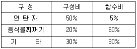
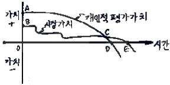
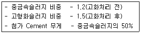
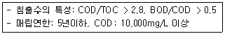
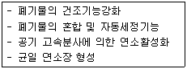
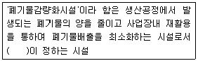

폐기물처리기사 (2005-03-20 기출문제)
1과목: 폐기물 개론
1. 우리나라 분뇨의 특성에 대한 설명으로 옳지 않은 것은?
- 비중은 1.02 정도이고 비점도는 1.2 ∼ 2.2 정도이다
- 협잡물의 함유량은 대략 4 ∼ 7 %이다.
- 분과 뇨 고형질의 구성비는 7:1정도이다.
- BOD는 8,000 ∼ 15,000 mg/L로 편차가 심하다.
(정답률: 알수없음)

2. 어떤 쓰레기의 분석결과가 다음과 같을 때 함수비는?

- 18.5%
- 23.5%
- 24.7%
- 26.5%
(정답률: 알수없음)
3. 스크린상에서 비중이 다른 입자의 층을 통과하는 액류를 상하로 맥동시켜서 층의 팽창수축을 반복하여 무거운 입자는 하층으로 가벼운 입자는 상층으로 이동시켜 분리하는 중력분리 방법은?
- Secators
- Jigs
- Melt separation
- Air stoners
(정답률: 알수없음)
4. 폐기물 전과정평가(LCA)의 목적과 가장 거리가 먼 것은?
- 환경부하, 저감면에서의 제품, 제법 등의 개선점 도출
- 생활양식의 평가와 개선 목표의 도출
- 환경오염부하의 기준치 설정 및 저감기술개발
- 유통, 처리, 재활용 등 사회 시스템의 검토 및 평가
(정답률: 알수없음)
5. 다음 중 적환장(transfer station)을 수송차량에 옮겨 싣는 방식에 따라 분류한 것이 아닌 것은?
- 직접 투하 방식
- 저장 투하 방식
- 연속 투하 방식
- 직접·저장 투하 결합방식
(정답률: 알수없음)
6. 쓰레기를 파쇄할 때 90% 이상을 3.8cm보다 작게 파쇄하려고 할때 Rosin-Lammler Model에 의한 특성입자의 크기는? (단, n = 1 )
- 3.15cm
- 2.85cm
- 2.45cm
- 1.65cm
(정답률: 알수없음)
7. 고형물함량이 10%인 반고상 폐기물 100톤을 고상폐기물로 만들기 위해서 증발시켜야 하는 최소량의 수분량(톤)은?
- 27.3
- 29.3
- 31.3
- 33.3
(정답률: 알수없음)
8. 폐기물 1일 배출량이 10000m3이며, 밀도가 500kg/m3이다. 10톤 트럭으로 이 폐기물을 1일 2회 운반한다면 1일 필요한 차량수는? (단, 대기차량 1대을 포함)
- 250
- 251
- 252
- 253
(정답률: 알수없음)
9. 다음은 소비자 중심의 쓰레기 발생 mechanism을 모식적으로 나타낸 그림이다. 폐기물로서 발생되는 시점과 재활용이 가능한 구간을 각각 가장 적절하게 나타낸 것은?(오류 신고가 접수된 문제입니다. 반드시 정답과 해설을 확인하시기 바랍니다.)

- C, DE
- D, DE
- E, CE
- E, DE
(정답률: 알수없음)
10. 다음 중 유해 폐기물의 특성과 가장 거리가 먼 것은?
- 인화성
- 부패성
- 반응성
- 부식성
(정답률: 알수없음)
11. 자동화, 무공해화, 안전화 등의 장점이 있으나 한번 투입한 폐기물의 회수가 곤란하고 큰 쓰레기는 파쇄 등의 전처리가 필요한 방법은?
- monorail 수송
- pipeline 수송
- container 수송
- conveyer 수송
(정답률: 알수없음)
12. 발열량에 대한 설명으로 옳지 않은 것은?
- 소각로의 설계시 이용하는 열량은 저위발열량이다.
- 수분을 50% 이상 함유하는 쓰레기는 삼성분조성비를 바탕으로 발열량을 측정하여야 오차가 적다.
- 쓰레기의 가연분, 수분, 회분의 조성비로 저위발열량을 추정할 수 있다.
- Dulong 공식에 의한 발열량 계산은 화학적원소분석을 기초로 한다.
(정답률: 알수없음)
13. 쓰레기 발생량 예측방법 중에서 단지 시간과 그에 따른 쓰레기 발생량간의 상관관계만을 고려하여 수식화하는 방법은?
- 경향법
- 다중회귀모델
- 동적모사모델
- 연차예측법
(정답률: 알수없음)
14. 도시 쓰레기의 수거 및 운반에 대해 기술한 아래 사항 중 옳지 않은 것은?
- 언덕길은 올라가면서 수거하도록 한다.
- 될 수 있으면 ∪자 회전을 피하여 수거한다.
- 될 수 있는 한 한번 간 길은 가지 않는 것이 좋다.
- 쓰레기 운반은 교통상황에 따라 야간에 하는 것이 좋다.
(정답률: 알수없음)
15. 트롬멜 스크린에 대한 설명으로 옳지 않은 것은?
- 스크린 중에서 선별효율이 좋고 유지관리상의 문제가 적다.
- 스크린내 체류시간은 적어도 30 ~ 60sec 범위를 유지하여야 한다.
- 스크린의 경사도가 크면 효율은 떨어지고 부하율은 커진다.
- 최적회전속도는 경험적으로 임계속도×0.45 정도이다.
(정답률: 알수없음)
16. 어느 도시의 연간 쓰레기발생량이 14,000,000ton 이고 수거대상 인구가 8,500,000명, 가구당 인원은 5명, 쓰레기 수거인부는 1일당 12460명이 작업하며 1명의 인부가 매일 8시간씩 작업할 경우 MHT는?
- 1.90
- 2.10
- 2.30
- 2.60
(정답률: 알수없음)
17. 쓰레기의 수거시 용적을 감소 시키는 것이 유리한 것으로 알려져 있다. 다음 장치 중 폐수 처리시설이 있어야만 사용할 수 있는 것은?
- Bag Compactor
- Baler
- Pulverizer
- Shredder
(정답률: 알수없음)
18. 함수율 75%의 하수슬러지 80m3와 함수율 40%의 톱밥 120m3을 혼합 했을때의 함수율은?
- 48%
- 50%
- 54%
- 58%
(정답률: 알수없음)
19. 포졸란(pozzolan)에 대한 설명으로 옳지 않은 것은?
- 포졸란이란 그 자체만으로는 자경성이 없지만 Ca(OH)2와 반응할 수 있는 물질이다.
- 포졸란은 Ca(OH)2 와 결합하여 불용성, 수밀성 화합물을 형성한다.
- 시멘트와 혼합하여 사용하면 워커빌리티가 증가하고, 초기강도를 증가시킨다.
- 대표적인 포졸란은 fly ash이다.
(정답률: 알수없음)
20. 다음 합성수지 및 화학물질 중 소각할 때 다이옥신 발생과 직접적인 관계가 없는 물질은?
- PVC
- PCB
- PE
- DDT
(정답률: 알수없음)
2과목: 폐기물 처리 기술
21. 슬러지 혐기성소화조의 작동상태를 알기 위해 유기산농도를 측정하였더니 측정치가 3,500ppm 이었다면 소화상태는?
- 산성 소화과정으로 진행되고 있다.
- 정상적이다.
- 온도가 정상온도보다 조금 높다.
- 메탄균의 활동이 활발하다.
(정답률: 알수없음)
22. 중금속슬러지를 시멘트로 고형화처리할 경우 다음 조건에서 부피변화율(VCF)은?

- 1.8
- 1.6
- 1.4
- 1.2
(정답률: 알수없음)
23. 다음 중 폐기물 성분과 고화재 사이의 화학적 반응이 주된 화학적 처리법은?
- 열가소성 플라스틱법
- 유기중합체법
- 피막형성법
- 유리화법
(정답률: 알수없음)
24. 해안매립공법 중 '박층 뿌림공법'에 관한 설명으로 틀린것은?
- 쓰레기 지반안정화에 유리하다.
- 쓰레기 매립부지 조기이용에 유리하다.
- 설비가 소규모인 매립지에 적합한 방법이다.
- 매립효율이 떨어진다.
(정답률: 알수없음)
25. 침출수의 특성이 다음과 같을 때 처리공정의 효율성이 가장 알맞게 짝지어진 것은?

- 생물학적처리- 양호, 화학적침전(석회투여)- 양호, 화학적산화- 양호, 이온교환수지- 양호
- 생물학적처리- 양호, 화학적침전(석회투여)- 불량, 화학적산화- 불량, 이온교환수지- 불량
- 생물학적처리- 양호, 화학적침전(석회투여)- 불량, 화학적산화- 양호, 이온교환수지- 양호
- 생물학적처리- 양호, 화학적침전(석회투여)- 불량, 화학적산화- 불량, 이온교환수지- 양호
(정답률: 알수없음)
26. LFG 중 CO2제거공정과 가장 거리가 먼 것은?
- 흡수, 흡착법
- 화학적 전환법
- 고온분리: 고온 증류에 의해 분리
- 막분리: 막으로 선택적 통과 분리
(정답률: 알수없음)
27. 폐기물 고형화 방법 중 배기가스를 탈황시킬 때 발생되는 슬러지(FGD 슬러지)의 처리에 많이 이용되는 것은?
- 피막형성법
- 열가소성 플라스틱법
- 석회기초법
- 자가 시멘트법
(정답률: 알수없음)
28. 매립지의 표면차수막 중 "지하연속벽" 에 관한 설명으로 가장 거리가 먼 것은?
- 모든 지반에 적용가능하다.
- 굴착깊이가 낮은 곳에 이용한다.
- 차수효과가 좋으나 접속부위를 잘 시공해야 한다.
- 재료는 콘크리트, 시멘트 모르타르 등이 쓰이며 공법으로 주열식과 벽식이 있다.
(정답률: 알수없음)
29. 퇴비화 과정의 영향인자에 대한 설명으로 옳지 않은 것은?
- 슬러지 입도가 너무 작으면 공기유통이 나빠져 혐기성 상태가 될 수 있다.
- 슬러지를 퇴비화할 때 Bulking agent를 혼합하는 주목적은 산소와 접촉면적을 넓히기 위한 것이다.
- 숙성퇴비를 반송하는 것은 Seeding과 pH조정이 목적이다.
- C/N비가 너무 높으면 유기물의 암모니아화로 악취가 발생한다.
(정답률: 알수없음)
30. 매립지 바닥으로부터 나오는 침출수의 속도는 Darcy법칙으로 추정할 수 있는데, 이 침출수의 배출속도를 단위 면적(m2)당 0.2ℓ/일 허용하며 매립지 바닥의 침출수 층의 높이를 0.6m로 유지시키고자 한다. 이에 필요한 매립지 바닥의 점토층(침투율 0.07ℓ/일-m2)두께는?
- 0.11m
- 0.23m
- 0.32m
- 0.44m
(정답률: 알수없음)
31. 1일 5000m3/일의 하수를 처리하는 분뇨처리장의 1차 침전지에서 침전된 슬러지내 고형물이 0.2톤/일, 2차침전지에서 0.1톤/일이 제거되며, 각 슬러지의 함수율은 98%, 99.5%이다. 고형물을 정체시간 2일로 하여 농축시키려면 농축조의 크기는? (단, 슬러지의 비중은 1.0으로 가정함)
- 40m3
- 60m3
- 80m3
- 100m3
(정답률: 알수없음)
32. 유해성 폐기물 고형화(solidification)에 관한 설명 중 잘못된 것은?
- 시멘트에 의한 고형화는 용출이 되지 않도록 피복이 가능한 장점이 있다.
- 석회에 의한 고형화는 특별한 기술이 필요없다는 것이 장점이다.
- 시멘트에 의한 고형화는 pH가 높아 중금속이 비용해 되는 장점이 있다.
- 석회에 의한 고형화는 동결 및 해빙에 대해 강한 장점이 있다.
(정답률: 알수없음)
33. A 매립지의 경우 COD가 방류수 수질기준을 초과하고 있기때문에 기존공정에 펜톤처리공정과 RBC공정을 추가하여 운전하고 있다면 다음 중 추가 원인으로 가장 적합한 것은?
- 난분해성 유기물질의 과다유입
- 휘발성 유기화합물의 과다유입
- 질소성분 과다유입
- 용존고형물 과다유입
(정답률: 알수없음)
34. 호기성 소화공법이 혐기성 소화공법에 비하여 갖고 있는 장점이라 할 수 없는 것은?
- 하수처리 규모가 일정규모 이하인 경우, 시설비가 저렴할 수 있다.
- 유출수의 암모니아 농도가 낮다.
- 생산된 슬러지의 탈수성이 우수하다.
- 소화기간이 비교적 짧다.
(정답률: 알수없음)
35. 분뇨 처리장의 전처리시설에 대한 설명으로 옳지 않은 것은?
- 투입구수는 시간 최대 반입량을 기준하여 정한다.
- 투입조에서는 협잡물과 토사류를 제거하는 시설을 갖추고 있다.
- 저류조의 크기는 일평균 수거량을 기준으로 정한다.
- 투입 펌프의 관경은 100㎜ 이상이어야 한다.
(정답률: 알수없음)
36. 유해폐기물 고화처리방법 중 자가시멘트법에 관한 설명으로 옳지 않은 것은?
- 물질은 안정하고, 비발화성이고 난분해성이다.
- 공정상 특별한 기술이 필요없으며 설비비도 싸다.
- 보조에너지가 필요하다.
- 많은 황화물을 가지는 폐기물에 적합하다.
(정답률: 알수없음)
37. 초산과 포도당을 각각 1몰씩 혐기성소화하였을 때 양론적 메탄발생량을 비교한 것으로 올바른 것은?
- 포도당 1몰 혐기성소화시 초산 1몰 혐기성소화시보다 메탄발생량은 1.5배 많다.
- 포도당 1몰 혐기성소화시 초산 1몰 혐기성소화시보다 메탄발생량은 2배 많다.
- 포도당 1몰 혐기성소화시 초산 1몰 혐기성소화시보다 메탄발생량은 2.5배 많다.
- 포도당 1몰 혐기성소화시 초산 1몰 혐기성소화시보다 메탄발생량은 3배 많다.
(정답률: 알수없음)
38. 혐기성 소화조에서 일반적으로 사용되는 단위용적에 대한 유기물 부하율은 kg·VS/m3·day 로 표시하는데 고율소화조의 유기물 부하율로 가장 적절한 것은?
- 0.2
- 0.6
- 1.1
- 1.8
(정답률: 알수없음)
39. 유기물질을 함유한 폐액을 활성탄에 의하여 처리할 경우 유기물질의 용해도와 처리효율에 관한 설명으로 알맞는 것은?
- 용해도가 낮을수록 흡착이 잘된다.
- 용해도가 적절한 경우 흡착이 잘된다.
- 용해도가 높을수록 흡착이 잘된다.
- 용해도와 흡착과는 상관관계가 없다.
(정답률: 알수없음)
40. 폐기물 매립지에서 매립시간 경과에 따라 크게 다음과 같이 초기조절단계, 전이단계, 산형성단계, 메탄발효단계, 숙성단계의 총 5단계로 구분이 되는데 이때 4단계인 메탄발효단계에서 나타나는 현상과 가장 근접한 것은?
- 수소농도가 증가함
- 산 형성 속도가 상대적으로 증가함
- 침출수의 전도도가 증가함
- pH가 중성값보다 약간 증가함
(정답률: 알수없음)
3과목: 폐기물 소각 및 열회수
41. 배기가스의 분진 농도가 2,000㎎/Nm3인 소각로에서 분진을 처리하기 위하여 집진효율 50%인 중력집진기, 80%인 여과 집진기 그리고 세정집진기가 직렬로 연결되어있다. 먼지농도를 10㎎/Nm3이하로 줄이기 위해서는 세정집진기의 집진효율은 최소한 몇 % 이상 되어야 하는가?
- 65%
- 75%
- 85%
- 95%
(정답률: 알수없음)
42. 소각조건의 3T란 무엇인가?
- 온도, 연소량, 혼합
- 온도, 연소량, 압력
- 온도, 압력, 혼합
- 온도, 연소시간, 혼합
(정답률: 알수없음)
43. 폐기물의 소각, 연소과정에서 발생되는 오염물질에 의해 100℃ 이하에서의 저온 부식 및 400℃ 이상의 노에서는 고온 부식이 진행될 수 있다. 이런 부식에 가장 직접적인 영향을 주는 물질은 무엇인가?
- 질소산화물
- 입자상 물질과 탄화수소류
- 염화수소 및 황화합물
- 일산화탄소
(정답률: 알수없음)
44. 고형폐기물 조성에 따라 다양하게 변화되는 연소방식에 관한 설명으로 알맞지 않은 것은?
- 함수율이 높은 대상물의 연소공정은 건조-표면승온-휘발분생성-착화-불꽃이동연소-고정탄소의 표면연소의 순으로 이루어진다.
- 함수율이 높은 대상물의 소각형식은 건조효율이 매우 높고 연소속도가 빠른 형식을 선택하여야 한다.
- 함수율이 극히 낮은 대상물중 휘발분이 많고 열분해 속도가 빠른 것의 완전연소를 위해서는 1차연소로 가스건류화하고 2-3차연소에 있어서 공기를 균등하게 확산 공급하여 연소한다.
- 함수율이 극히 낮은 대상물중 휘발분이 적고 착화 연소성이 불량한 것은 화격자 상향연소방식으로 소각하며 연소분위기의 온도를 비교적 낮게 유지하면서 연소한다.
(정답률: 알수없음)
45. 다음은 소각로 특정부위의 성능을 설명한 것이다. 가장 알맞은 부위는?

- 폐기물 호퍼(hoper)
- 폐기물 슈트(chute)
- 단위화격자(stoker)
- 폐기물 풋셔(pusher)
(정답률: 알수없음)
46. 액주입식소각로(Liquid Injection Incinerator)에 대한 설명으로 옳지 않은 것은?
- 운영비가 저렴하다.
- 광범위한 종류의 액상폐기물을 연소할 수 있다.
- 대기오염 방지시설 이외에 소각재의 처리설비가 필요없다.
- 구동장치가 복잡하여 고장과 노즐 막힘이 잦다.
(정답률: 알수없음)
47. 메탄 1Sm3 를 공기과잉계수 1.2로 완전연소시킬 경우 습윤 연소가스량(Sm3)은?
- 약 10.2
- 약 12.4
- 약 14.5
- 약 16.7
(정답률: 알수없음)
48. 보상케-사툰식에 의하면 황산화물의 허용배출량은 굴뚝높 이와 어떠한 관계에 있는가?
- 황산화물의 허용배출량은 굴뚝높이에 비례한다.
- 황산화물의 허용배출량은 굴뚝높이의 세제곱에 비례한다.
- 황산화물의 허용배출량은 유효굴뚝높이의 제곱근에 비례한다.
- 황산화물의 허용배출량은 유효굴뚝높이의 제곱에 비례한다.
(정답률: 알수없음)
49. 로타리 킬른식(Rotary Kiln)소각로의 단점이라 볼 수 없는 것은?
- 로의 외부노출로 인한 고온 가동이 어려워 독성물질 파괴처리가 곤란하다.
- 비교적 열효율이 낮은 편이다.
- 로에서의 공기유출이 크므로 종종 대량의 과잉공기가 필요하다.
- 대기오염 제어시스템에 분진부하율이 높다.
(정답률: 알수없음)
50. 열효율이 55%인 유동층 소각로에서 10℃의 슬러지 1톤을 소각시켰다. 배기온도가 450℃라면 연소온도는 얼마인가?(단, 열효율은 배기온도 만을 고려한다.)
- 955℃
- 988℃
- 1015℃
- 1⑤0℃
(정답률: 알수없음)
51. 저발열량이 3500kcal/Nm3인 가스연료의 이론연소온도는? (단, 이론연소가스량은 10m3/Nm3, 연료연소가스의 평균정압비열은 0.35kcal/Nm3·℃, 기준온도는 15℃, 공기는 예열되지 않으며, 연소가스는 해리되지 않는 것으로 한다.)
- 약 1015℃
- 약 1130℃
- 약 1250℃
- 약 1310℃
(정답률: 알수없음)
52. 공기예열기에 대한 설명으로 옳지 않은 것은?
- 굴뚝가스 여열을 이용하여 연소용 공기를 예열하여 보일러의 효율을 높이는 장치이다.
- 연료의 착화와 연소를 양호하게 하고 연소온도를 높이는 효과가 있다.
- 이코노마이저와 병용 설치할 경우 공기예열기를 저온측에 설치한다.
- 공기예열기의 대표적인 것으로는 증기식, 구동식, 피구동식이 있다.
(정답률: 알수없음)
53. 스토커(Stoker)방식 소각로의 구조 구성인자와 가장 거리가 먼 것은?
- 건조대(Drying Zone)
- 후 연소대(Post Combustion Zone)
- 프리보드 대(Free Board Zone)
- 제 2 연소실
(정답률: 알수없음)
54. 연소기를 공기주입 없이 또는 부족한 공기주입 상태에서 운전시킬 수 있는 반면 주입되는 폐기물의 입자가 작아야 하며 주입량도 그다지 크지 못한 것이 단점인 열분해 장치는?
- 고정상 열분해장치
- 유동상 열분해장치
- 회분식 열분해장치
- 회전로형 열분해장치
(정답률: 알수없음)
55. 중유의 저위발열량 1,000kcal 당 연소에 필요한 이론공기량은? (단, 중유의 저위발열량을 10,000kcal/kg으로 하며 Rosin 식 적용)
- 약 0.2Sm3
- 약 1Sm3
- 약 5Sm3
- 약 8Sm3
(정답률: 알수없음)
56. 폐기물을 열분해처리할 경우 열분해온도의 증가에 따른 가스구성비의 변화에 대한 내용으로 가장 적절한 것은?
- C2H4 - 감소
- C2H6 - 증가
- 수소 - 증가
- CO - 감소
(정답률: 알수없음)
57. 증기 터어빈에 대한 설명으로 옳지 않은 것은?
- 증기의 속도 에너지를 회전운동으로 변환시키는 과정에서 증기의 열 에너지 변환을 필요로 한다.
- 작동원리는 속도에너지를 어떤 형태로 사용하느냐에 따라 충동식과 반동식으로 구분한다.
- 증기유동방향 관점으로 분류하면 축류터어빈, 반경류터어빈으로 나누어 진다.
- 배압터어빈은 산업용 전체의 약 70%를 점하며 증기를 다량으로 소비하는 산업분야에서 널리 쓰이고 있다.
(정답률: 알수없음)
58. 다음의 고정상 연소방식에 대한 설명으로 적절치 못한 것은?
- 플라스틱과 같이 열에 열화, 용해되는 것을 잘 소각시킬 수 있다.
- 슬러지, 입자상물질의 소각이 가능하다.
- 체류시간이 짧아 국부가열 발생 가능성이 크다.
- 연소효율이 나쁘고 잔사의 용량이 많아진다.
(정답률: 알수없음)
59. 질소산화물의 제거 처리를 위한 선택적 촉매환원법(SCR)과 비교한 선택적 무촉매 환원법(SNCR)에 대한 설명으로 옳지 않은 것은?
- 운전온도는 850~900℃ 정도로 고온이다.
- 다이옥신의 제거는 불가능하다.
- 설치공간이 적고 설치비도 저렴하다.
- 암모니아 슬립(Slip)이 적다.
(정답률: 알수없음)
60. 도시생활폐기물을 1일 100톤 소각처리코자 한다. 1일 소각운전시간 24시간, 소각대상물의 저위발열량 2,000kcal/kg, 연소실 열부하율 1.2 x 105kcal/m3·hr 일 때 소각로의 유효용적은?
- 약 60m3
- 약 70m3
- 약 80m3
- 약 90m3
(정답률: 알수없음)
4과목: 폐기물 공정시험기준(방법)
61. 비소 측정방법에 대한 설명으로 옳은 것은?
- 염화제일주석으로 시료중의 비소를 6가 비소로 환원시킨 후 아연분말을 넣어 발생되는 비화수소를 원자화시켜 원자흡광광도법에 의해 측정한다.
- 원자흡광광도법에서 아연분말은 비소함량이 0.01ppm 이하이어야 한다.
- 비소는 유도결합플라즈마발광광도법에 따라 정량할 수 있다.
- 흡광광도법에서 발색제는 디티존 용액이다.
(정답률: 알수없음)
62. 원자흡광분석에서 검량선작성법에 해당되지 않는 것은?
- 검량선법
- 표준첨가법
- 검량표준법
- 내부표준법
(정답률: 알수없음)
63. 이온전극법에 의하여 시안을 측정하는 경우 정량범위와 표준편차는?
- 정량범위 : 0.1 ~ 10mgCN-/L, 표준편차 5~10%
- 정량범위 : 0.1 ~ 50mgCN-/L, 표준편차 5~20%
- 정량범위 : 0.1 ~ 100mgCN-/L, 표준편차 5~10%
- 정량범위 : 0.1 ~ 100mgCN-/L, 표준편차 5~20%
(정답률: 알수없음)
64. 함수량이 90%인 시료를 용출실험하여 분석한 결과, 카드뮴의 함량이 5ppm이었다. 수분함량을 보정하여 계산하면 카드뮴의 함량(ppm)은?
- 5.5
- 7.5
- 10.5
- 12.5
(정답률: 알수없음)
65. 대상폐기물의 량이 1톤 이상 5톤 미만인 경우 시료의 최소 수는?
- 10
- 14
- 20
- 30
(정답률: 알수없음)
66. 구리의 시험방법에 대한 설명으로 옳지 않은 것은?
- 원자흡광광도법으로 정량시 전처리한 검액은 0.1∼1N 산성용액으로 하여 시험한다.
- 원자흡광광도법에서 사용하는 지시약은 디에틸 디티오카르바민산 나트륨 용액을 사용한다.
- 흡광광도법에서 검수중에 시안화합물이 함유되어 있을 경우는 염산산성으로 끓여 시안화물을 완전히 분해 제거하여야 한다.
- 흡광광도법에서 추출용매로 초산부틸 대신 사염화탄소, 클로로포름 등을 사용할 수도 있다.
(정답률: 알수없음)
67. 유기인 측정(가스크로마토그래피법)에 대한 설명으로 옳지 않은 것은?
- 크로마토그램을 작성하여 나타난 피이크의 머무름시간에 따라 각 유기인성분을 확인하고 피이크의 높이 또는 면적을 측정하여 유기인을 정량한다.
- 컬럼충전제중 고정상 고체는 일반적으로 가스크로 마토그래피용 실리콘 DC를 사용한다.
- 검출기는 염광광도형 검출기 또는 질소, 인 검출기를 사용한다.
- 농축장치는 구데르나다니쉬형 농축기 또는 회전증발 농축기를 사용한다.
(정답률: 알수없음)
68. pH 표준액 조제에 대한 설명으로 옳지 않은 것은?
- 염기성 표준액은 산화칼슘(생석회) 흡수관을 부착하여 2개월 이내에 사용한다.
- 조제한 pH표준액은 경질유리병에 보관한다.
- 산성표준액은 3개월 이내에 사용한다.
- pH 표준액의 조제에 사용되는 물은 정제수를 증류하여 그 유출액을 15분간 이상 끊여 이산화탄소를 날려보내고 생석회 흡수관을 담아 식힌 다음 사용한다.
(정답률: 알수없음)
69. 크롬의 원자흡광광도법에 의한 측정에서 공기-아세틸렌 불꽃으로는 철, 니켈 등에 기인한 방해영향이 크다. 이 때의 대책으로 가장 적절한 것은?
- 황산나트륨을 1% 정도 넣어서 측정한다.
- 수소-공기-알곤 불꽃으로 바꾸어 측정한다.
- 수소-산소 불꽃으로 바꾸어 측정한다.
- 이소부틸케톤 용액 20mℓ를 넣어 측정한다.
(정답률: 알수없음)
70. 폐기물 시료 용기로서 적당하지 않는 것은?
- 플라스틱 바구니
- 무색 경질의 유리병
- 폴리에틸렌병
- 폴리에틸렌백
(정답률: 알수없음)
71. 흡광광도법에서 자외부 파장부분을 사용할 경우에 해당하지 않는 것은?
- 중수소 방전관 광원을 사용한다.
- 플라스틱제 흡수셀을 사용한다.
- 측광부에는 광전자증배관을 사용한다.
- 파장선택부로는 모노크로메타를 사용한다.
(정답률: 알수없음)
72. 백분율에 대한 내용으로 옳지 않은 것은?
- 용액 100㎖중의 성분무게(g), 또는 가스 100㎖ 중의 성분무게(g)를 표시할 때는 W/V%의 기호를 쓴다.
- 용액 100㎖중의 성분용량(㎖), 또는 가스 100㎖중의 성분용량(㎖)을 표시할 때는 V/V%의 기호를 쓴다.
- 용액 100g중 성분용량(㎖)을 표시할 때는 V/W%의 기호를 쓴다.
- 용액 100g중 성분무게(g)를 표시할 때는 W/V%의 기호를 쓴다. 다만, 용액의 농도를 '%'로만 표시할 때는 W/W%를 뜻한다.
(정답률: 알수없음)
73. 용출시험방법에서 여과가 어려운 경우에는 원심분리기를 사용하는데 이 때 원심분리기의 회전속도와 시간은?
- 매분당 2,000회전 이상, 10분 이상
- 매분당 2,000회전 이상, 20분 이상
- 매분당 3,000회전 이상, 10분 이상
- 매분당 3,000회전 이상, 20분 이상
(정답률: 알수없음)
74. 원자흡광광도분석에서 분광학적 간섭에 해당하는 것은?
- 분석에 사용하는 스펙트럼선이 다른 인접선과 완전히 분리되지 않은 경우
- 시료용액의 점도가 높아져 분무 능률이 저하함으로서 흡광의 강도가 저하되는 경우
- 불꽃 중에서 원자가 이온화하는 경우
- 공존물질과 작용하여 해리하기 어려운 화합물이 생성되어 흡광에 관계하는 기저상태의 원자수가 감소하는 경우
(정답률: 알수없음)
75. 피리딘-파라졸론법에 의한 CN 시험방법에 대한 설명으로 옳지 않은 것은?
- 지시약으로 페놀프탈레인·에틸알코올용액을 넣는다.
- 다량의 유지류가 함유된 시료는 초산 또는 수산화나트륨 용액으로 pH 6~7로 조절한다.
- 잔류염소가 함유된 시료는 잔류염소 50㎎당 L-아스코르 빈산(10W/V%) 0.6㎖를 넣어 제거한다.
- 황화합물이 함유된 시료는 초산아연 용액(10W/V%) 2㎖를 넣어 제거한다.
(정답률: 알수없음)
76. 카드뮴을 유도결합플라즈마발광광도법에 따라 정량 시 일반적인 발광측정 파장(㎚)은?
- 226.5
- 440
- 490
- 530
(정답률: 알수없음)
77. 어떤 정색액의 흡광도를 20mm셀을 사용하여 측정한 결과 흡광도는 1.34이었다. 이 액을 10mm의 셀로 측정한다면 흡광도는?
- 0.67
- 0.17
- 0.127
- 0.254
(정답률: 알수없음)
78. 유도결합플라즈마발광광도법에 대한 설명으로 옳지 않은 것은?
- 시료도입부, 고주파전원부, 광원부, 분광부, 연산처리부 및 기록부로 구성된다.
- 토치(Torch)는 3중으로 된 석영관이 이용된다.
- 플라즈마의 온도는 최고 25,000K에 이르며, 이온도에서는 분석에 장애가 되는 많은 간섭이 배제된다.
- 토치 위에 형성된 알곤플라즈마는 중심축보다 약간 바깥쪽(2~4mm)에서 전자밀도가 가장 높다.
(정답률: 알수없음)
79. 원자흡광광도법의 원리에 대한 설명으로 옳은 것은?
- 기저상태의 원자가 고유파장의 광을 흡수하는 세기를 측정한다.
- 여기상태의 원자가 고유파장의 광을 흡수하는 세기를 측정한다.
- 분자가 열에 의하여 원자화될 때 광을 흡수하는 세기를 측정한다.
- 분자가 열에 의하여 원자가 될 때 광을 통과시키는 세기를 측정한다.
(정답률: 알수없음)
80. 흡광광도법을 이용한 6가 크롬의 정량에서 시료중 어떤 성분이 있을 경우 발색을 방해하는가?
- 잔류염소
- 유기물
- 탄소
- 이산화탄소
(정답률: 알수없음)
5과목: 폐기물 관계 법규
81. 환경부령이 정하는 다이옥신 측정기관과 가장 거리가 먼 것은?
- 환경관리공단
- 국립환경기술원
- 산업기술시험원
- 시,도 보건환경연구원
(정답률: 알수없음)
82. 시간당 처리능력이 4톤 미만 2톤 이상인 감염성폐기물 소각시설(신설시설)의 다이옥신 배출기준은?
- 0.1 ng-TEQ/Nm3
- 0.5 ng-TEQ/Nm3
- 1 ng-TEQ/Nm3
- 5 ng-TEQ/Nm3
(정답률: 알수없음)
83. 환경부령이 정하는 매립시설의 검사기관이 아닌 것은?
- 환경관리공단
- 시·도 보건환경연구원
- 한국건설기술연구원
- 농업기반공사
(정답률: 알수없음)
84. 폐기물처리담당자등이 이수하여야 할 교육과정이 아닌것은?
- 사업장폐기물배출자과정
- 폐기물처리업 관리자과정
- 폐기물처리시설 기술담당자과정
- 폐기물재활용신고자과정
(정답률: 알수없음)
85. 다음은 폐기물 처리시설의 유지, 관리를 위해 기술 관리인을 두어야 하는 폐기물 처리시설과 관련된 설명이다. 다음중 기술관리인을 두지 않아도 되는 시설은? (단, 폐기물처리업자가 운영하는 폐기물처리시설을 제외한다.)
- 감염성폐기물을 대상으로 하는 소각시설로서 소각능력이 시간당 150킬로그램인 시설
- 압축시설로서 1일 처리능력이 500톤인 시설
- 절단시설로서 1일 처리능력이 200톤인 시설
- 멸균분쇄시설로서 시간당 처리능력이 150킬로그램인 시설
(정답률: 알수없음)
86. 지정 폐기물 중 감염성 폐기물의 관리 및 처리 기준과 방법에 대한 설명으로 거리가 먼 것은?
- 운반차량은 0℃이하의 냉동설비가 설치되어 있고, 운행 중에는 항상 냉동설비가 가동되어야 한다.
- 수집·운반차량의 차체는 백색으로 도색하여야 한다.
- 적재함의 양쪽 옆면, 뒷면에 쓰는 글씨의 색깔은 녹색으로 하여야 한다.
- 감염성 폐기물의 전용용기의 색상은 검정색으로 한다.
(정답률: 알수없음)
87. 폐기물처리업중 건설폐기물을 수집, 운반하는 경우에 장비 기준으로 알맞는 것은?
- 덤프트럭, 컨테이너트럭, 암롤트럭 또는 기계식 상차 장치가 부착된 차량 2대이상(특별시의 경우에는 3대이상), 이 경우 적재능력이 15톤 이상인 차량 1대를 포함하여야 한다.
- 덤프트럭, 컨테이너트럭, 암롤트럭 또는 기계식 상차 장치가 부착된 차량 2대이상(특별시의 경우에는 4대이상), 이 경우 적재능력이 15톤 이상인 차량 1대를 포함하여야 한다.
- 덤프트럭, 컨테이너트럭, 암롤트럭 또는 기계식 상차 장치가 부착된 차량 3대이상(특별시의 경우에는 5대이상), 이 경우 적재능력이 15톤 이상인 차량 1대를 포함하여야 한다.
- 덤프트럭, 컨테이너트럭, 암롤트럭 또는 기계식 상차 장치가 부착된 차량 3대이상(특별시의 경우에는 6대이상), 이 경우 적재능력이 15톤 이상인 차량 1대를 포함하여야 한다.
(정답률: 알수없음)
88. 다음중 폐기물관리법령에서 정하고 있는 폐기물처리시설의 정기검사주기로 맞는 것은?
- 소각시설의 최초 정기검사: 사용개시일부터 2년
- 매립시설의 최초 정기검사: 사용개시일부터 2년
- 멸균분쇄시설의 최초 정기검사: 사용개시일부터 3월
- 음식물류폐기물처리시설의 최초 정기검사: 사용개시일부터 6월
(정답률: 알수없음)
89. 폐기물관리법상 폐기물 처리시설과 가장 거리가 먼 것은?
- 멸균분쇄시설
- 파쇄시설(동력이 10 마력인 경우)
- 사료화시설(1일 처리능력 100kg 인 경우)
- 퇴비화시설(1일 처리능력 100kg 인 경우)
(정답률: 알수없음)
90. 폐기물재활용신고자 또는 그가 고용한 기술담당자가 교육을 받아야 하는 교육기관으로 알맞는 곳은?
- 환경관리공단
- 환경보전협회
- 해당지역 유역환경청
- 시,도 보건환경연구원
(정답률: 알수없음)
91. 폐기물처리시설 중 관리형 매립시설의 관리기준으로 잘못된 내용은?
- 매립작업 종료후에는 15㎝ 이상 두께로 다져 일일복토를 한다.
- 매립작업이 7일 이상 중단시는 노출된 매립층의 표면 부분에 30㎝ 이상 두께로 다져 중간 복토를 한다.
- 매립시설의 사용이 종료된 때에는 최종복토층을 기울기가 1% 이상이 되도록 설치하여야 한다.
- 매립시설의 사용이 종료된 후 가스배제층은 30cm 이상 두께로 설치한다.
(정답률: 알수없음)
92. 음식물류 폐기물처리시설의 기술관리인의 법적 자격기준과 가장 거리가 먼 것은?
- 위생사
- 기계기사
- 전기기사
- 대기환경산업기사
(정답률: 알수없음)
93. 동물성 잔재물 및 감염성 폐기물중 부패·변질의 우려가 있는 폐기물의 방치시 폐기물의 처리명령대상이 되는 조업중단기간기준은?
- 3일
- 7일
- 10일
- 15일
(정답률: 알수없음)
94. 다음은 용어에 대한 정의이다. ( )안에 알맞는 내용은?

- 대통령령
- 국무총리형
- 환경부령
- 시,도지사령
(정답률: 알수없음)
95. 폐기물처리업자가 폐기물처리 가격의 최고액보다 높거나 최저액보다 낮은 가격으로 폐기물을 수탁한 경우에 대한 행정처분기준으로 적절한 것은?
- 1천만원 이하의 과태료
- 1년 이하의 징역 또는 5백만원 이하의 벌금
- 2년 이하의 징역 또는 1천만원 이하의 벌금
- 3년 이하의 징역 또는 2천만원 이하의 벌금
(정답률: 알수없음)
96. 지정폐기물 처리기준 및 방법중 지정폐기물을 시멘트로 고형화 하는 경우 시멘트의 양이 1m3당 몇 kg 이상이어야 하는가? (단, 공통기준, 감염성폐기물제외)
- 150
- 200
- 250
- 300
(정답률: 알수없음)
97. 환경부장관에 의해 폐쇄명령을 받았으나 이행하지 아니한 자에 대한 벌칙기준으로 적절한 것은?
- 5년 이하의 징역 또는 3천만원 이하의 벌금
- 3년 이하의 징역 또는 2천만원 이하의 벌금
- 2년 이하의 징역 또는 1천만원 이하의 벌금
- 1천만원 이하의 과태료
(정답률: 알수없음)
98. 감염성폐기물의 종류중 병리계폐기물과 가장 거리가 먼것은? (단, 시험, 검사등에 사용된 것임)
- 배양용기
- 수액세트
- 폐장갑
- 혈액병
(정답률: 알수없음)
99. 환경부장관 또는 시,도지사가 폐기물처리업자에서 영업정지에 갈음하여 부과할 수 있는 과징금의 최대 액수는?
- 5천만원
- 1억원
- 2억원
- 3억원
(정답률: 알수없음)
100. 다음은 에너지 회수기준에 관한 내용이다. 틀린 것은?
- 다른 물질과 혼합하지 아니하고 당해 폐기물의 저위발열량이 3천kcal/kg 이상일 것
- 에너지 회수효율(회수에너지 총량을 투입에너지 총량으로 나눈 비율을 말한다)이 75% 이상일 것
- 회수열은 전량 열원으로 스스로 이용하거나 다른 사람에게 공급할 것
- 환경부장관이 정하여 고시하는 경우에는 폐기물의 50% 이상을 원료 또는 재료로 재활용하고 그 나머지 중에서 에너지의 회수에 이용할 것
(정답률: 알수없음)